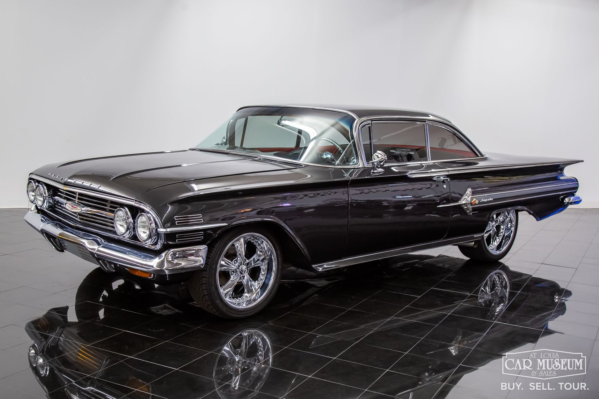
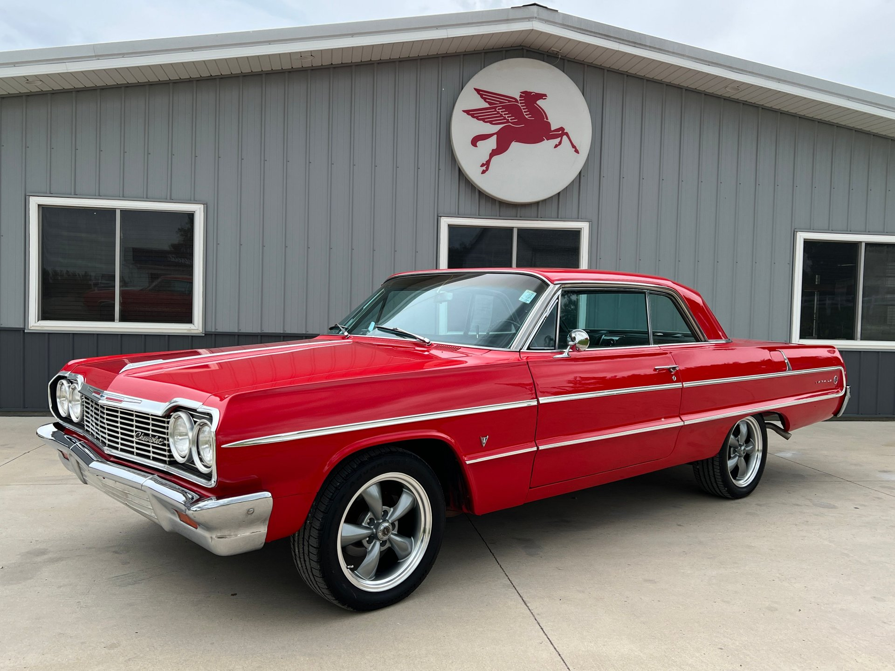
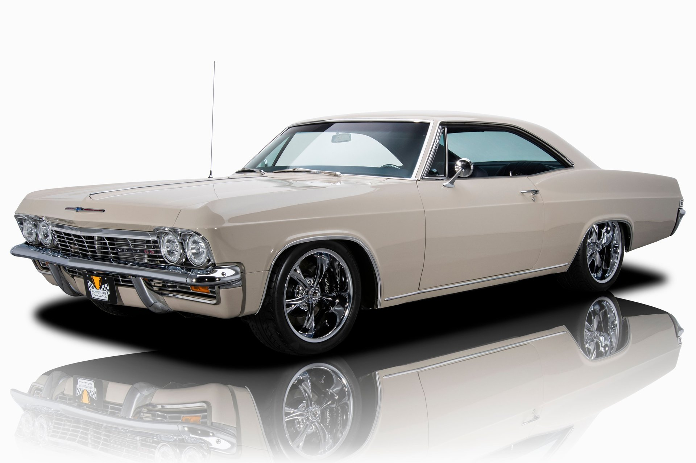
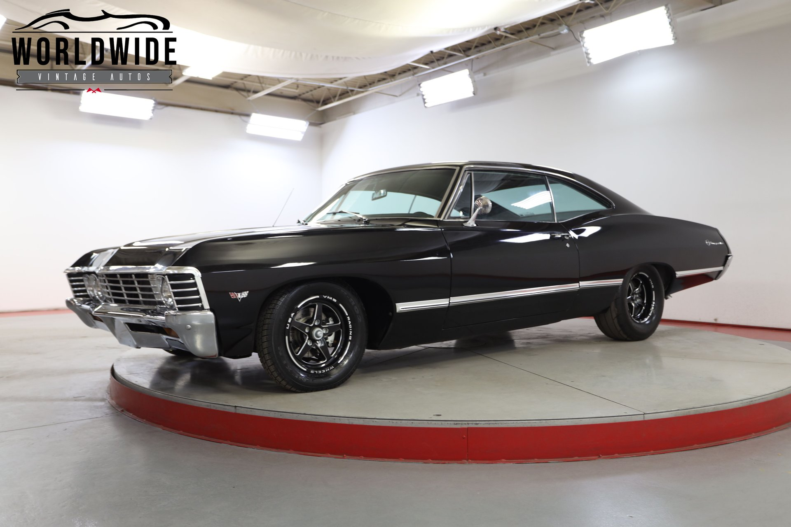

Chevrolett Impala 1960
A 1960-as Chevrolet Impala a híres amerikai autóipari márka egyik ikonikus modellje, amely a nagy teljesítményű, kényelmes és stílusos szedánok képviselője. Az 1960-as évben az Impala új külső dizájnt kapott, amely éles vonalvezetésével, szélesebb testével és modern, finoman lekerekített elemeivel kiemelkedett a konkurenciából. Az autó különlegessége volt a nagy motorkínálat, melyben szerepelt egy 348 köbci-es V8-as motor is, amely figyelemre méltó teljesítményt biztosított. A kabin belső tere is eleganciát sugárzott, finom kárpitozással és fejlett technológiai újításokkal. Az Impala a kor luxusautójának számított, amely a divatos megjelenés és a kényelmes vezetési élmény kombinációját nyújtotta.
Chevrolett Impala 1964
A 1964-es Chevrolet Impala a 60-as évek egyik legismertebb amerikai autója, amely a stílust és a teljesítményt ötvözi. Az 1964-es modell a Chevrolet Impala ötödik generációjához tartozik, és finomított külső dizájnnal rendelkezett, amely a letisztult vonalakat és a karakteres, széles orrot helyezte előtérbe. Az autó egyaránt kínált kényelmet és teljesítményt, különféle motorválasztékokkal, köztük a híres 327 köbci-es V8-as motorral. A 1964-es Impala volt az egyik első, amely modernizált belső teret kapott, többek között új kárpitozással és kényelmes ülésekkel. Az autó rendkívül népszerű volt, és az amerikai autóipar egyik emblematikus modelljévé vált.Az Impala nemcsak a közlekedés, hanem az amerikai kultúra szimbólumává is vált a 60-as években.
Chevrolett Impala 1965
A 1965-ös Chevrolet Impala egy ikonikus amerikai nagyautó, amely a Chevrolet legnépszerűbb modelljei közé tartozott. Az Impala 1965-ös kiadása a márka egyik legnagyobb és legkényelmesebb autójaként vált ismertté, egyes változataiban akár 8 személy számára is kényelmes utazást biztosított. A 1965-ös Impala stílusa a klasszikus 60-as évekbeli amerikai autókat idézi, széles, alacsony profilú dizájnnal és jellegzetes, hosszú orral. Az autó különböző karosszéria változatokban volt elérhető, például négyajtós szedán, kétszemélyes kabrió és kétajtós kupé formájában. A modell motorválasztéka is széleskörű volt, 6-hengeres és V8-as motorokkal is elérhető volt. Az erősebb V8-as motorok akár 425 lóerőt is produkáltak, amelyek sportos teljesítményt biztosítottak. A 1965-ös Impala nemcsak a teljesítmény, hanem a kényelmes utazás és a fejlett technológiai megoldások terén is kiemelkedett, mint például az opcionális légkondicionáló és az új típusú szórakoztató rendszerek. Az Impala 1965-ös kiadása a modern autóipar egyik mérföldkövének számít, és a mai napig nagy rajongótáborral bír, mint a klasszikus amerikai autók szerelmeseinek egyik kedvenc típusa.
Chevrolett Impala 1967
A 1967-es Chevrolet Impala az 1960-as évek egyik legismertebb amerikai nagyautója volt, amely tovább építette a márka sikerét. Az Impala 1967-es változata új dizájnt kapott, amely letisztultabb és modernabb megjelenést kölcsönzött az autónak, miközben megőrizte klasszikus, impozáns formáját. Az új, élesebb vonalak és a bővített, hosszú orr jellegzetessé tették. A modell karosszériaválasztéka széles volt, elérhető volt szedán, kupé és kabrió változatokban is. A motorválaszték is sokszínű volt, kezdve a 6-hengeres erőforrásoktól egészen a nagy teljesítményű V8-as motorokig, amelyek akár 385 lóerőt is kínáltak. A 1967-es Impala nemcsak teljesítményében, hanem kényelmében és technológiai fejlesztéseiben is előrelépett, például új ülések, szórakoztató rendszerek és jobb futómű jellemezték. A 1967-es Impala sikeres modell volt, és mára a klasszikus autók kedvelői között is keresett típusnak számít, a maga korabeli stílusával és teljesítményével.